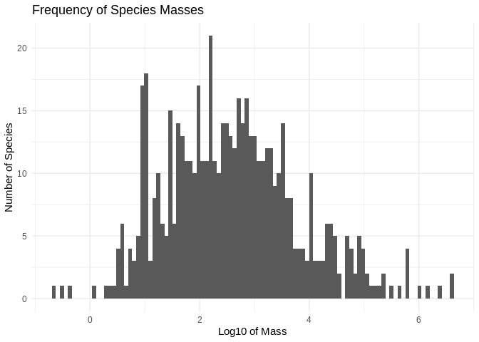

Chapter 5 Practice
We have covered a lot in the last few lessons, so this one presents some practice exercises to ground what we have learned and introduce a few more commonly-used functions.
5.1 Working with a single tidy table
- Load the tidyverse collection of package and the
herepackage for constructing paths:
## ── Attaching packages ────────────────────────────────── tidyverse 1.2.1 ──## ✔ ggplot2 3.2.1 ✔ purrr 0.3.3
## ✔ tibble 2.1.3 ✔ dplyr 0.8.3
## ✔ tidyr 1.0.0 ✔ stringr 1.4.0
## ✔ readr 1.3.1 ✔ forcats 0.4.0## ── Conflicts ───────────────────────────────────── tidyverse_conflicts() ──
## ✖ dplyr::filter() masks stats::filter()
## ✖ dplyr::lag() masks stats::lag()## here() starts at /home/travis/build/merely-useful/merely-useful.github.io- Use
here::hereto construct a path to a file andreadr::read_csvto read that file:
## Parsed with column specification:
## cols(
## person_id = col_character(),
## personal_name = col_character(),
## family_name = col_character()
## )## # A tibble: 5 x 3
## person_id personal_name family_name
## <chr> <chr> <chr>
## 1 dyer William Dyer
## 2 pb Frank Pabodie
## 3 lake Anderson Lake
## 4 roe Valentina Roerich
## 5 danforth Frank DanforthRead survey/site.csv.
- Count rows and columns using
nrowandncol:
## [1] 5## [1] 3How many rows and columns are in the site data?
- Format strings using
glue::glue:
## person has 5 rows and 3 columnsPrint a nicely-formatted summary of the number of rows and columns in the site data.
- Use
colnamesto get the names of columns andpasteto join strings together:
## person columns are person_id personal_name family_namePrint a nicely-formatted summary of the names of the columns in the site data.
- Use
dplyr::selectto create a new table with a subset of columns by name:
## # A tibble: 5 x 2
## family_name personal_name
## <chr> <chr>
## 1 Dyer William
## 2 Pabodie Frank
## 3 Lake Anderson
## 4 Roerich Valentina
## 5 Danforth FrankCreate a table with just the latitudes and longitudes of sites.
- Use
dplyr::filterto create a new table with a subset of rows by values:
## # A tibble: 3 x 3
## person_id personal_name family_name
## <chr> <chr> <chr>
## 1 dyer William Dyer
## 2 lake Anderson Lake
## 3 danforth Frank DanforthCreate a table with only sites south of -48 degrees.
- Use the pipe operator
%>%to combine operations:
## # A tibble: 3 x 2
## family_name personal_name
## <chr> <chr>
## 1 Dyer William
## 2 Lake Anderson
## 3 Danforth FrankCreate a table with only the latitudes and longitudes of sites south of -48 degrees.
- Use
dplyr::mutateto create a new column with calculated values andstringr::str_lengthto calculate string length:
## # A tibble: 5 x 4
## person_id personal_name family_name name_length
## <chr> <chr> <chr> <int>
## 1 dyer William Dyer 4
## 2 pb Frank Pabodie 7
## 3 lake Anderson Lake 4
## 4 roe Valentina Roerich 7
## 5 danforth Frank Danforth 8Look at the help for the built-in function round and then use it to create a table with latitudes and longitudes rounded to integers.
- Use
dplyr::arrangeto order rows and (optionally)dplyr::descto impose descending order:
person %>%
dplyr::mutate(name_length = stringr::str_length(family_name)) %>%
dplyr::arrange(dplyr::desc(name_length))## # A tibble: 5 x 4
## person_id personal_name family_name name_length
## <chr> <chr> <chr> <int>
## 1 danforth Frank Danforth 8
## 2 pb Frank Pabodie 7
## 3 roe Valentina Roerich 7
## 4 dyer William Dyer 4
## 5 lake Anderson Lake 4Create a table sorted by decreasing longitude (i.e., most negative longitude last).
5.2 Working with grouped data
- Read
survey/measurements.csvand look at the data withView:
## Parsed with column specification:
## cols(
## visit_id = col_double(),
## visitor = col_character(),
## quantity = col_character(),
## reading = col_double()
## )- Find rows where
readingis not NA, save ascleaned, and report how many rows were removed:
## [1] 1Rewrite the filter expression to select rows where the visitor and quantity are not NA either and report the total number of rows removed.
- Group measurements by quantity measured and count the number of each (the column is named
nautomatically):
## # A tibble: 3 x 2
## # Groups: quantity [3]
## quantity n
## <chr> <int>
## 1 rad 8
## 2 sal 7
## 3 temp 3Group by person and quantity measured.
- Find the minimum, average, and maximum for each quantity:
cleaned %>%
dplyr::group_by(quantity) %>%
dplyr::summarize(low = min(reading), mid = mean(reading), high = max(reading))## # A tibble: 3 x 4
## quantity low mid high
## <chr> <dbl> <dbl> <dbl>
## 1 rad 1.46 6.56 11.2
## 2 sal 0.05 9.24 41.6
## 3 temp -21.5 -18.7 -16Look at the range for each combination of person and quantity.
- Rescale salinity measurements that are greater than 1:
cleaned <- cleaned %>%
dplyr::mutate(reading = ifelse(quantity == 'sal' & reading > 1.0, reading/100, reading))
cleaned## # A tibble: 18 x 4
## visit_id visitor quantity reading
## <dbl> <chr> <chr> <dbl>
## 1 619 dyer rad 9.82
## 2 619 dyer sal 0.13
## 3 622 dyer rad 7.8
## 4 622 dyer sal 0.09
## 5 734 pb rad 8.41
## 6 734 lake sal 0.05
## 7 734 pb temp -21.5
## 8 735 pb rad 7.22
## 9 751 pb rad 4.35
## 10 751 pb temp -18.5
## 11 752 lake rad 2.19
## 12 752 lake sal 0.09
## 13 752 lake temp -16
## 14 752 roe sal 0.416
## 15 837 lake rad 1.46
## 16 837 lake sal 0.21
## 17 837 roe sal 0.225
## 18 844 roe rad 11.2Do the same calculation use case_when.
- Read
visited.csv, drop the NAs and store invisits. Useanti_join()to find the measurements incleanedthat don’t have matches invisits:
## Parsed with column specification:
## cols(
## visit_id = col_double(),
## site_id = col_character(),
## visit_date = col_date(format = "")
## )## Joining, by = "visit_id"## # A tibble: 4 x 4
## visit_id visitor quantity reading
## <dbl> <chr> <chr> <dbl>
## 1 752 lake rad 2.19
## 2 752 lake sal 0.09
## 3 752 lake temp -16
## 4 752 roe sal 0.416Are there any sites in visits that don’t have matches in cleaned?
- Join
visitswith the cleaned-up table of readings:
## # A tibble: 14 x 6
## visit_id site_id visit_date visitor quantity reading
## <dbl> <chr> <date> <chr> <chr> <dbl>
## 1 619 DR-1 1927-02-08 dyer rad 9.82
## 2 619 DR-1 1927-02-08 dyer sal 0.13
## 3 622 DR-1 1927-02-10 dyer rad 7.8
## 4 622 DR-1 1927-02-10 dyer sal 0.09
## 5 734 DR-3 1930-01-07 pb rad 8.41
## 6 734 DR-3 1930-01-07 lake sal 0.05
## 7 734 DR-3 1930-01-07 pb temp -21.5
## 8 735 DR-3 1930-01-12 pb rad 7.22
## 9 751 DR-3 1930-02-26 pb rad 4.35
## 10 751 DR-3 1930-02-26 pb temp -18.5
## 11 837 MSK-4 1932-01-14 lake rad 1.46
## 12 837 MSK-4 1932-01-14 lake sal 0.21
## 13 837 MSK-4 1932-01-14 roe sal 0.225
## 14 844 DR-1 1932-03-22 roe rad 11.2Join visited.csv with site.csv to get (date, latitude, longitude) triples for site visits.
- Find the dates of the highest radiation reading at each site:
cleaned %>%
dplyr::filter(quantity == "rad") %>%
dplyr::group_by(site_id) %>%
dplyr::mutate(max_rad = max(reading)) %>%
dplyr::filter(reading == max_rad)## # A tibble: 3 x 7
## # Groups: site_id [3]
## visit_id site_id visit_date visitor quantity reading max_rad
## <dbl> <chr> <date> <chr> <chr> <dbl> <dbl>
## 1 734 DR-3 1930-01-07 pb rad 8.41 8.41
## 2 837 MSK-4 1932-01-14 lake rad 1.46 1.46
## 3 844 DR-1 1932-03-22 roe rad 11.2 11.2Another way to do it:
cleaned %>%
dplyr::filter(quantity == "rad") %>%
dplyr::group_by(site_id) %>%
dplyr::top_n(1, reading) %>%
dplyr::select(site_id, visit_date, reading)## # A tibble: 3 x 3
## # Groups: site_id [3]
## site_id visit_date reading
## <chr> <date> <dbl>
## 1 DR-3 1930-01-07 8.41
## 2 MSK-4 1932-01-14 1.46
## 3 DR-1 1932-03-22 11.2Explain why this doesn’t work.
cleaned %>%
dplyr::filter(quantity == "rad") %>%
dplyr::group_by(site_id) %>%
dplyr::summarize(max_rad = max(reading)) %>%
dplyr::ungroup() %>%
dplyr::filter(reading == max_rad)## Error: object 'reading' not found- Normalize radiation against the highest radiation seen per site:
cleaned %>%
dplyr::filter(quantity == "rad") %>%
dplyr::group_by(site_id) %>%
dplyr::mutate(
max_rad = max(reading),
frac_rad = reading / max_rad) %>%
dplyr::select(visit_id, site_id, visit_date, frac_rad)## # A tibble: 7 x 4
## # Groups: site_id [3]
## visit_id site_id visit_date frac_rad
## <dbl> <chr> <date> <dbl>
## 1 619 DR-1 1927-02-08 0.873
## 2 622 DR-1 1927-02-10 0.693
## 3 734 DR-3 1930-01-07 1
## 4 735 DR-3 1930-01-12 0.859
## 5 751 DR-3 1930-02-26 0.517
## 6 837 MSK-4 1932-01-14 1
## 7 844 DR-1 1932-03-22 1Normalize salinity against mean salinity by site.
- Find stepwise change in radiation per site by date:
cleaned %>%
dplyr::filter(quantity == "rad") %>%
dplyr::group_by(site_id) %>%
dplyr::mutate(delta_rad = reading - dplyr::lag(reading)) %>%
dplyr::arrange(site_id, visit_date)## # A tibble: 7 x 7
## # Groups: site_id [3]
## visit_id site_id visit_date visitor quantity reading delta_rad
## <dbl> <chr> <date> <chr> <chr> <dbl> <dbl>
## 1 619 DR-1 1927-02-08 dyer rad 9.82 NA
## 2 622 DR-1 1927-02-10 dyer rad 7.8 -2.02
## 3 844 DR-1 1932-03-22 roe rad 11.2 3.45
## 4 734 DR-3 1930-01-07 pb rad 8.41 NA
## 5 735 DR-3 1930-01-12 pb rad 7.22 -1.19
## 6 751 DR-3 1930-02-26 pb rad 4.35 -2.87
## 7 837 MSK-4 1932-01-14 lake rad 1.46 NAFind length of time between visits by site.
- Find sites that experience any stepwise increase in radiation between visits:
cleaned %>%
dplyr::filter(quantity == "rad") %>%
dplyr::group_by(site_id) %>%
dplyr::mutate(delta_rad = reading - dplyr::lag(reading)) %>%
dplyr::filter(!is.na(delta_rad)) %>%
dplyr::summarize(any_increase = any(delta_rad > 0)) %>%
dplyr::filter(any_increase)## # A tibble: 1 x 2
## site_id any_increase
## <chr> <lgl>
## 1 DR-1 TRUEFind sites with visits more than one year apart.
5.3 Creating charts
We will use data on the mass and home range area (HRA) of various species from:
Tamburello N, Côté IM, Dulvy NK (2015) Data from: Energy and the scaling of animal space use. Dryad Digital Repository. https://doi.org/10.5061/dryad.q5j65
## Parsed with column specification:
## cols(
## .default = col_character(),
## mean.mass.g = col_double(),
## log10.mass = col_double(),
## mean.hra.m2 = col_double(),
## log10.hra = col_double(),
## preymass = col_double(),
## log10.preymass = col_double(),
## PPMR = col_double()
## )## See spec(...) for full column specifications.## # A tibble: 6 x 24
## taxon common.name class order family genus species primarymethod N
## <chr> <chr> <chr> <chr> <chr> <chr> <chr> <chr> <chr>
## 1 lake… american e… acti… angu… angui… angu… rostra… telemetry 16
## 2 rive… blacktail … acti… cypr… catos… moxo… poecil… mark-recaptu… <NA>
## 3 rive… central st… acti… cypr… cypri… camp… anomal… mark-recaptu… 20
## 4 rive… rosyside d… acti… cypr… cypri… clin… fundul… mark-recaptu… 26
## 5 rive… longnose d… acti… cypr… cypri… rhin… catara… mark-recaptu… 17
## 6 rive… muskellunge acti… esoc… esoci… esox masqui… telemetry 5
## # … with 15 more variables: mean.mass.g <dbl>, log10.mass <dbl>,
## # alternative.mass.reference <chr>, mean.hra.m2 <dbl>, log10.hra <dbl>,
## # hra.reference <chr>, realm <chr>, thermoregulation <chr>,
## # locomotion <chr>, trophic.guild <chr>, dimension <chr>,
## # preymass <dbl>, log10.preymass <dbl>, PPMR <dbl>,
## # prey.size.reference <chr>- Look at how mass is distributed:
## `stat_bin()` using `bins = 30`. Pick better value with `binwidth`.
Try again with log10.mass:
## `stat_bin()` using `bins = 30`. Pick better value with `binwidth`.Create histograms showing the distribution of home range area using linear and log scales.
- Change the visual appearance of a chart:
ggplot2::ggplot(hra, mapping = aes(x = log10.mass)) +
ggplot2::geom_histogram(bins = 100) +
ggplot2::ggtitle("Frequency of Species Masses") +
ggplot2::xlab("Log10 of Mass") +
ggplot2::ylab("Number of Species") +
ggplot2::theme_minimal()
Show the distribution of home range areas with a dark background.
- Create a scatterplot showing the relationship between mass and home range area:
Create a similar scatterplot showing the relationship between the raw values rather than the log values.
- Colorize scatterplot points by class:
hra %>%
dplyr::mutate(class_fct = as.factor(class)) %>%
ggplot2::ggplot(mapping = aes(x = log10.mass, y = log10.hra, color = class_fct)) +
ggplot2::geom_point(alpha = 0.5)
Group by order and experiment with different alpha values.
- Create a faceted plot:
hra %>%
dplyr::mutate(class_fct = as.factor(class)) %>%
ggplot2::ggplot(mapping = aes(x = log10.mass, y = log10.hra, color = class_fct)) +
ggplot2::geom_point(alpha = 0.5) +
ggplot2::facet_wrap(vars(class_fct))
Create a plot faceted by order for just the reptiles.
- Fit a linear regression to the logarithmic data for birds:
hra %>%
dplyr::filter(class == "aves") %>%
ggplot2::ggplot(mapping = aes(x = log10.mass, y = log10.hra)) +
ggplot2::geom_point(alpha = 0.5) +
ggplot2::geom_smooth(method = lm, color = 'red', se = FALSE)Fit a line to the raw data for birds rather than the logarithmic data.
- Create a violin plot of mass by order for birds:
hra %>%
dplyr::filter(class == "aves") %>%
dplyr::mutate(order_fct = as.factor(order)) %>%
ggplot2::ggplot(mapping = aes(x = order_fct, y = log10.mass, color = order_fct)) +
ggplot2::geom_violin()
Rotate the labels on the X axis to make this readable, then explain the gaps.
- Display the same data as a boxplot:
hra %>%
dplyr::filter(class == "aves") %>%
dplyr::mutate(order_fct = as.factor(order)) %>%
ggplot2::ggplot(mapping = aes(x = order_fct, y = log10.mass, color = order_fct)) +
ggplot2::geom_boxplot()Fix the labels and remove orders that only contain one species.
- Save the linear regression plot for birds as a PNG:
hra %>%
dplyr::filter(class == "aves") %>%
ggplot2::ggplot(mapping = aes(x = log10.mass, y = log10.hra)) +
ggplot2::geom_point(alpha = 0.5) +
ggplot2::geom_smooth(method = lm, color = 'red', se = FALSE)
## Saving 7 x 5 in imageSave the plot as SVG scaled to be 8cm wide.
- Create a horizontal histogram with 50 bins:
ggplot2::ggplot(hra, mapping = aes(x = log10.mass)) +
ggplot2::geom_histogram(bins = 50) +
ggplot2::coord_flip()
Use stat_summary to summarize the relationship between mass and home range area by class.